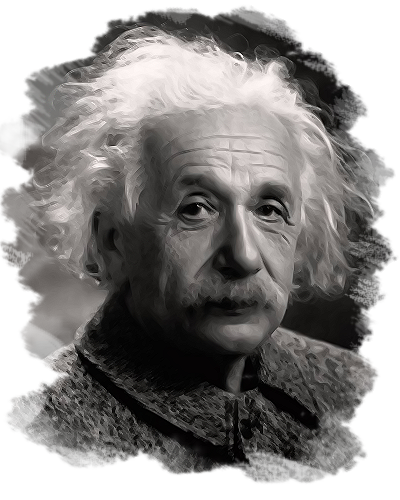

Albert Einstein
(E=mc2)

Physist,Scientist(1879-1955)
10 Things you Didn't Know About Albert Einstein:
- Underachieving school kids have long taken solace in the claim that Einstein flunked math as a youth, but the records show that he was actually an exceptional, if not reluctant, student. He scored high grades during his school days in Munich, and was only frustrated by what he described as the “mechanical discipline” demanded by his teachers.
- In 1896, Einstein renounced his German citizenship and enrolled at the Swiss Federal Polytechnic School in Zurich. There, he began a passionate love affair with Mileva Maric, a fellow physicist-in-training originally from Serbia.
- Einstein showed flashes of brilliance during his years at the Zurich Polytechnic, but his rebellious personality and penchant for skipping classes saw his professors give him less than glowing recommendations upon his graduation in 1900.
- After his marriage to Mileva Maric hit the rocks in the early 1910s, Einstein left his family, moved to Berlin and started a new relationship with his cousin, Elsa. He and Maric finally divorced several years later in 1919.
- In 1915, Einstein published his theory of general relativity, which stated that gravitational fields cause distortions in the fabric of space and time.
- Shortly before Hitler rose to power in 1933, Einstein left Berlin for the United States and took a position at the Institute for Advanced Study in Princeton, New Jersey.
- In the late-1930s, Einstein learned that new research had put German scientists on a path toward creating the atom bomb.
- Though not traditionally religious, Einstein felt a deep connection to his Jewish heritage and often spoke out against anti-Semitism.
- Einstein died in April 1955 from an abdominal aortic aneurysm. He had requested that his body be cremated, but in a bizarre incident, Princeton pathologist Thomas Harvey removed his famous brain during his autopsy and kept it in the hope of unlocking the secrets of his genius.
"The important thinng is not to stop questioning. Curiosity has its own reason for existing."
-- Albert Einstein